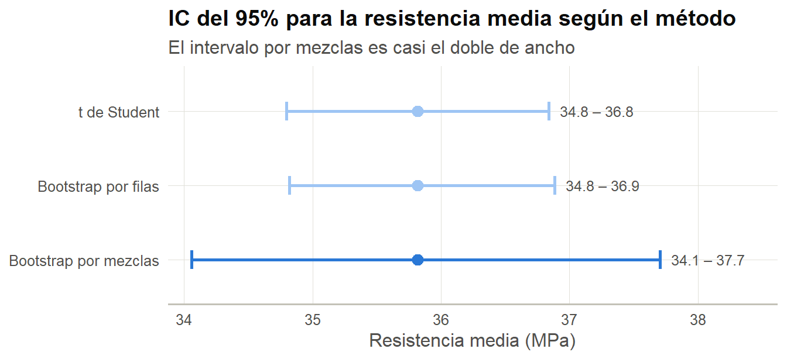

Capítulo 4 Intervalos de confianza
Este capítulo desarrolla el objetivo específico 1: estimar intervalos de confianza para la resistencia del concreto y la dosificación de ceniza volante, considerando los resultados de normalidad del capítulo anterior.
Nota metodológica. Las pruebas de Lilliefors rechazaron la normalidad de todas las variables. Con \(n = 1030\) el teorema central del límite justifica el intervalo \(t\) para la media, pero se contrasta con un intervalo bootstrap percentil, que no depende de la forma de la distribución.
4.1 Verificación de supuestos
El intervalo \(t\) para la media supone observaciones independientes y una población normal (o una muestra grande). Cada supuesto se contrasta con un nivel de significancia \(\alpha = 0.05\):
- Normalidad: \(H_0\): la variable proviene de una distribución normal, frente a \(H_1\): no es normal.
- Independencia: no se cumple del todo. Las 1,030 filas corresponden a solo 428 mezclas distintas, porque una misma mezcla se ensaya a varias edades (sección 3.9.3). Las filas de una mezcla están correlacionadas, así que el intervalo \(t\) clásico resulta demasiado estrecho. Se corrige con un bootstrap por mezclas (se remuestrean mezclas completas, no filas sueltas).
x_ceniza_pos <- df_fe$ceniza[df_fe$ceniza > 0]
bind_rows(
fila_sup("Normalidad de resistencia", "Lilliefors",
"resistencia es normal", nortest::lillie.test(df_fe$resistencia)$p.value),
fila_sup("Normalidad de resistencia", "Shapiro-Wilk",
"resistencia es normal", shapiro.test(df_fe$resistencia)$p.value),
fila_sup("Normalidad de ceniza (todas las mezclas)", "Lilliefors",
"ceniza es normal", nortest::lillie.test(df_fe$ceniza)$p.value),
fila_sup("Normalidad de ceniza (solo ceniza > 0)", "Lilliefors",
"ceniza (> 0) es normal", nortest::lillie.test(x_ceniza_pos)$p.value)
) |>
tabla_kbl("Verificación de normalidad para los intervalos de confianza", digits = 4)| supuesto | prueba | H0 | p_valor | decision |
|---|---|---|---|---|
| Normalidad de resistencia | Lilliefors | resistencia es normal | 0.0003 | Se rechaza H0 |
| Normalidad de resistencia | Shapiro-Wilk | resistencia es normal | 0.0000 | Se rechaza H0 |
| Normalidad de ceniza (todas las mezclas) | Lilliefors | ceniza es normal | 0.0000 | Se rechaza H0 |
| Normalidad de ceniza (solo ceniza > 0) | Lilliefors | ceniza (> 0) es normal | 0.0000 | Se rechaza H0 |
Si se rechaza la normalidad, el intervalo \(t\) solo es aproximado: con \(n = 1030\) el teorema central del límite lo respalda para la media, pero se contrasta con el bootstrap percentil, que no exige normalidad. Si ambos coinciden, la conclusión es robusta.
4.2 Resistencia a la compresión
ic_t_resistencia <- t.test(df_fe$resistencia, conf.level = 0.95)
set.seed(2024)
boot_resistencia <- replicate(5000, mean(sample(df_fe$resistencia, replace = TRUE)))
# Bootstrap por mezclas: se remuestrean mezclas completas
filas_mezcla <- split(seq_len(nrow(df_fe)), df_fe$id_mezcla)
set.seed(2024)
boot_mezclas <- replicate(2000, {
ids <- sample(names(filas_mezcla), length(filas_mezcla), replace = TRUE)
mean(df_fe$resistencia[unlist(filas_mezcla[ids], use.names = FALSE)])
})
ic_resistencia <- tibble(
metodo = c("t de Student (supone independencia)",
"Bootstrap percentil por filas (5000 réplicas)",
"Bootstrap por mezclas (2000 réplicas, corrige dependencia)"),
media = mean(df_fe$resistencia),
limite_inferior = c(ic_t_resistencia$conf.int[1], quantile(boot_resistencia, 0.025),
quantile(boot_mezclas, 0.025)),
limite_superior = c(ic_t_resistencia$conf.int[2], quantile(boot_resistencia, 0.975),
quantile(boot_mezclas, 0.975))
)
tabla_kbl(ic_resistencia, "IC del 95% para la resistencia media (MPa)")| metodo | media | limite_inferior | limite_superior |
|---|---|---|---|
| t de Student (supone independencia) | 35.818 | 34.796 | 36.839 |
| Bootstrap percentil por filas (5000 réplicas) | 35.818 | 34.820 | 36.885 |
| Bootstrap por mezclas (2000 réplicas, corrige dependencia) | 35.818 | 34.058 | 37.707 |
ic_resistencia |>
mutate(
metodo = c("t de Student", "Bootstrap por filas", "Bootstrap por mezclas"),
metodo = factor(metodo, levels = rev(metodo)),
corrige = metodo == "Bootstrap por mezclas"
) |>
ggplot(aes(x = media, y = metodo, color = corrige)) +
geom_errorbarh(aes(xmin = limite_inferior, xmax = limite_superior), height = 0.25, linewidth = 1) +
geom_point(size = 3) +
geom_text(aes(x = limite_superior, label = sprintf("%.1f – %.1f", limite_inferior, limite_superior)),
hjust = -0.15, size = 3.3, color = "#52514e") +
scale_color_manual(values = c("FALSE" = col_azul_claro, "TRUE" = col_azul), guide = "none") +
scale_x_continuous(expand = expansion(mult = c(0.05, 0.25))) +
labs(title = "IC del 95% para la resistencia media según el método",
subtitle = "El intervalo por mezclas es casi el doble de ancho",
x = "Resistencia media (MPa)", y = NULL) +
tema_libro()
La resistencia media de las mezclas es de unos 35.8 MPa. El intervalo t la sitúa entre 34.8 y 36.8 MPa, pero es demasiado estrecho, porque las filas de una misma mezcla se parecen entre sí. El intervalo que sí respeta esa estructura (bootstrap por mezclas) va de 34.1 a 37.7 MPa, casi el doble de ancho, y es el que conviene reportar.
4.3 Ceniza volante
La ceniza tiene una gran proporción de ceros, así que se reporta el intervalo para todas las mezclas y para las que sí contienen ceniza.
ic_ceniza <- function(x, etiqueta) {
ic <- t.test(x, conf.level = 0.95)
set.seed(2024)
b <- replicate(5000, mean(sample(x, replace = TRUE)))
tibble(
grupo = etiqueta,
n = length(x),
media = mean(x),
ic_t_inf = ic$conf.int[1],
ic_t_sup = ic$conf.int[2],
ic_boot_inf = quantile(b, 0.025),
ic_boot_sup = quantile(b, 0.975)
)
}
bind_rows(
ic_ceniza(df_fe$ceniza, "Todas las mezclas"),
ic_ceniza(df_fe$ceniza[df_fe$ceniza > 0], "Solo mezclas con ceniza")
) |>
tabla_kbl("IC del 95% para la dosificación media de ceniza volante (kg/m³)")| grupo | n | media | ic_t_inf | ic_t_sup | ic_boot_inf | ic_boot_sup |
|---|---|---|---|---|---|---|
| Todas las mezclas | 1030 | 54.187 | 50.274 | 58.100 | 50.198 | 58.082 |
| Solo mezclas con ceniza | 464 | 120.286 | 117.214 | 123.359 | 117.241 | 123.325 |
Entre las mezclas que sí llevan ceniza, la dosis media es de unos 120 kg/m³ (IC 117 a 123). El promedio de todas las mezclas (54 kg/m³, IC 50 a 58) no describe a ninguna mezcla típica: el 55% no usa ceniza y el resto usa cerca de 120 kg/m³. Por eso la dosis se reporta solo entre las mezclas con ceniza.
4.4 Resistencia por grupo
df_fe |>
group_by(usa_ceniza) |>
summarise(
n = n(),
media = mean(resistencia),
ic_inf = t.test(resistencia)$conf.int[1],
ic_sup = t.test(resistencia)$conf.int[2],
.groups = "drop"
) |>
tabla_kbl("IC del 95% de la resistencia media según uso de ceniza (MPa)")| usa_ceniza | n | media | ic_inf | ic_sup |
|---|---|---|---|---|
| Sin ceniza | 566 | 36.772 | 35.249 | 38.294 |
| Con ceniza | 464 | 34.654 | 33.356 | 35.953 |
Sin ceniza la resistencia media es 36.8 MPa (IC 35.2 a 38.3) y con ceniza 34.7 MPa (IC 33.4 a 36.0). Los intervalos se solapan bastante, lo que anticipa una diferencia pequeña. Es solo una pista visual; la prueba formal está en el capítulo siguiente.